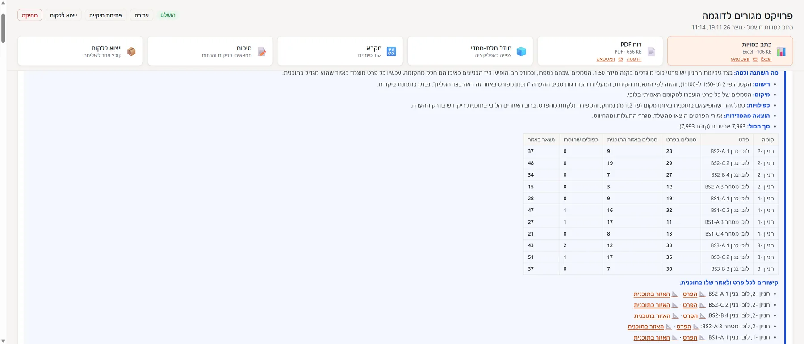
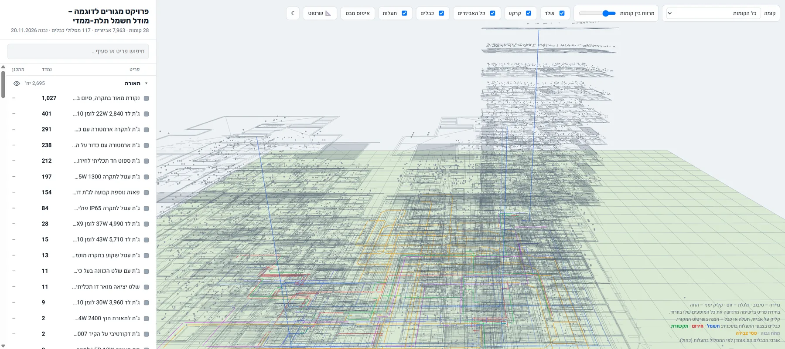
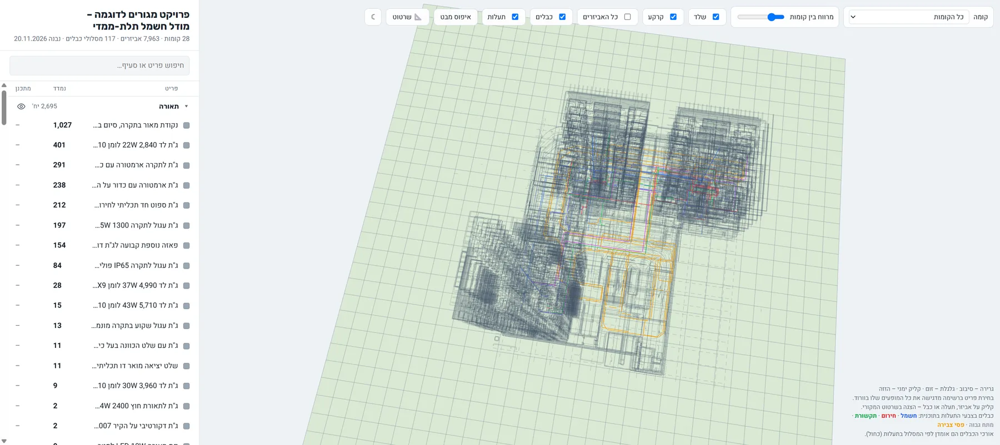
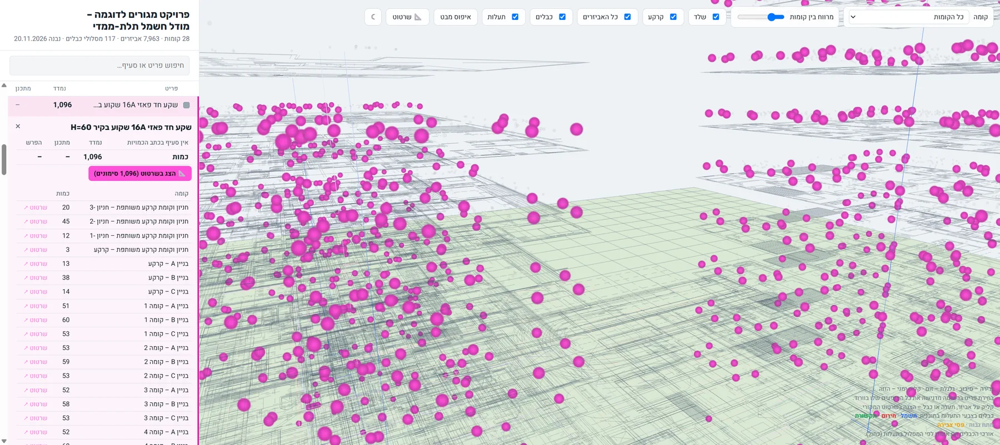
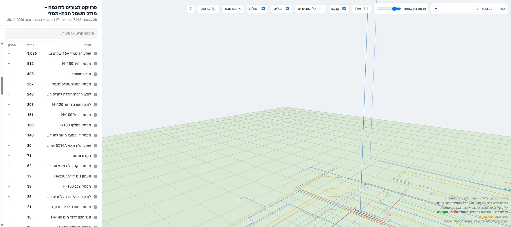
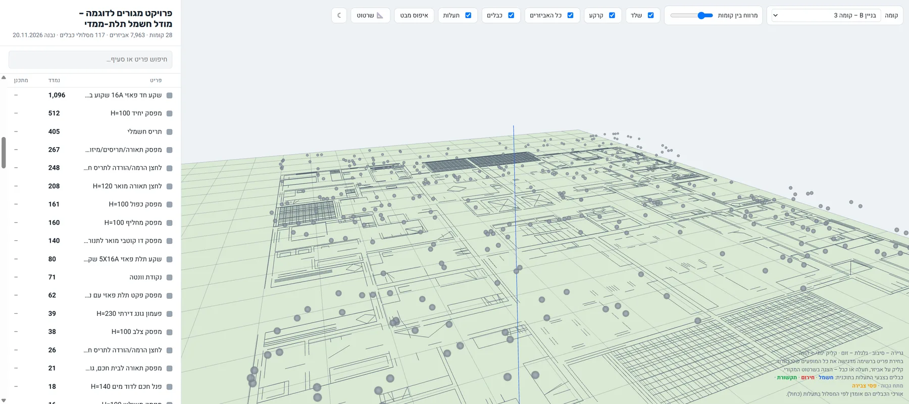
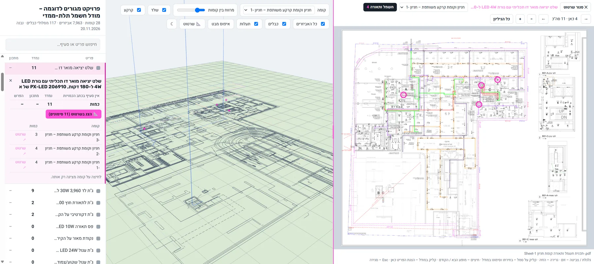
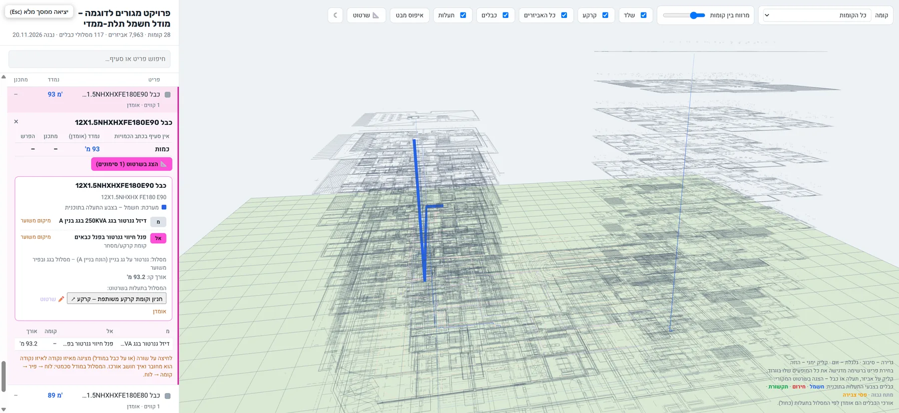

מתוכניות PDF לכתב כמויות מדוד, עם מקור לכל מספר
כמותן קוראת את תוכניות החשמל של הפרויקט: גיליונות קומה, לוחות, סכמות ותוכניות תשתית. היא סופרת אביזרים, מודדת תעלות, מעריכה אורכי כבלים ובונה מודל תלת-ממדי. כל מספר בכתב הכמויות מקושר למקום שלו בשרטוט, כך שאפשר לבדוק כל שורה בלחיצה.
הנתונים מפרויקט אמיתי של שלושה מגדלי מגורים מעל חניון משותף. שם הפרויקט, היזם, המתכנן וקודי הגיליונות הוסרו מכל התמונות.
ארבעה שלבים, מהקבצים ועד בדיקה
מעלים את החומרים
קובצי PDF או ZIP כפי שהתקבלו מהמתכנן: תוכניות חשמל ותאורה, תשתיות, לוחות, סכמות וכתב הכמויות של המתכנן אם יש.
העיבוד רץ במחשב
זיהוי הגיליונות והקומות, אימות קנה מידה, ספירת סמלים לפי המקרא, קריאת הלוחות, מדידת תעלות ואומדן כבלים. ההתקדמות מוצגת שלב אחרי שלב, ועיבוד שנעצר ממשיך מאותה נקודה.
מקבלים תוצרים
כתב כמויות ב-Excel, דוח PDF, מקרא סימנים עם ספירה, מודל תלת-ממדי, וסיכום ממצאים שבו כל ממצא מקושר למקום בשרטוט.
בודקים ומתקנים
שואלים את Claude על הפרויקט בשיחה, מדווחים על בעיה, ושולחים בקשת תיקון. לקחים מאושרים נשמרים ומשפרים את הפרויקט הבא.
האפליקציה עצמה
צילומי מסך מהפרויקט לדוגמה. לחיצה על תמונה מגדילה אותה.

כל אביזר, תעלה וכבל, במקום שלו
המודל נבנה מהשרטוטים עצמם. הקומות מיושרות לפי פירי המעליות, האביזרים יושבים על התוכנית, והכבלים עולים בפירים. בחירת פריט ברשימה מדגישה את כל המופעים שלו ופותחת את פרטיו, ולחיצה על אביזר מציגה אותו בשרטוט המקורי.







הספירה חושפת את מה שלא מסתדר
כדי לספור ולמדוד, כמותן משווה בין הגיליונות, המקרא, הלוחות והסכמות. סתירות עולות בדרך, וכל אחת מקבלת קישור למקום בשרטוט. אלה דוגמאות שנמצאו בפרויקט לדוגמה:
גיליון בקנה מידה אחר משאר הסט
גיליון קומת הקרקע מצויר ב-1:50, בלי כיתוב קנה מידה תקף, בתוך סט שכולו 1:100. השגיאה התגלתה כי קומות הבניינים לא התלכדו איתו. האורכים בקומה הזו נמדדו על גיליון אחר, ולכן לא הושפעו.
סמל אחד לשני פריטים
במקרא, גלאי חום וגוף תאורה עגול מסומנים באותו סמל. הממצא מסומן לבדיקה עם קישור לשתי השורות במקרא.
סתירות במספור
לוח שמופיע מוזן גם ממעגל 85 וגם ממעגל 86, ואותו מספר לוח שמשמש לשני לוחות שונים. הסתירות רשומות בגיליונות הלוחות בכתב הכמויות.
סמלים שמצוירים אחרת מהמקרא
בגיליונות החניון הסמלים קטנים מהמקרא ומפורקים לקווים. כמותן בנתה תבניות מהשרטוט עצמו, וכל הבדל כזה מתועד במקרא.
פרטים מוגדלים והפניות חסרות
11 פרטי לובי מוגדלים נבדקו מול האזור שהם מגדילים, כדי שאף אביזר לא ייספר פעמיים. הערה "ראה פרט 10" מפנה לפרט שלא נמצא בגיליונות שהתקבלו.
הפרש מול המתכנן
כשמצורף כתב הכמויות של המתכנן, כל סעיף מוצג עם הכמות שנמדדה, הכמות של המתכנן וההפרש, ושורה עם פער גדול מסומנת.
למי זה מתאים
תמחור הצעה למכרז
כמויות מדודות לכל סעיף, לפי קומה ולפי בניין, בימים הקצרים שבין קבלת התוכניות להגשה.
בדיקת כתב הכמויות של המתכנן
השוואה סעיף-סעיף בין הכמות של המתכנן לבין מה שמצויר בפועל, עם קישור לשרטוט לכל פער.
גרסה חדשה של תוכניות
מעלים את הגיליונות שהשתנו ומקבלים את הכמויות מחדש, בלי לספור שוב את כל הפרויקט.
הזמנת חומרים
אורכי כבלים לפי סוג וחתך, תעלות לפי מידה וסוג, וכמות אביזרים לפי דגם. כל זה עם טווח מינימום–מקסימום לאומדנים.
תכנון העבודה באתר
מטריצה לפי קומה ומודל תלת-ממדי שמראים מה עובר באיזו קומה, באיזה פיר ובאיזו תעלה.
שקיפות מול הלקוח
חבילת ייצוא אחת עם כתב הכמויות, הדוח, המקרא והמודל. כל מספר בה מקושר לשרטוט שממנו הגיע.
כמה זמן זה חוסך בהצעת מחיר?
בפרויקט לדוגמה העיבוד בהרצות שהושלמו לקח כשעתיים מכונה, כולל התיקונים. המחשבון למטה משווה לספירה ידנית לפי ההנחות שלכם. ערכי ברירת המחדל הם דוגמה בלבד, ואפשר לשנות כל אחד מהם.
הערכה בלבד. החישוב: (גיליונות × שעות לגיליון) פחות שעות הבדיקה, כפול עלות השעה. הוא לא כולל את עלות המנוי של Claude, ולא את התועלת מטעות שנתפסת לפני ההגשה.
מהכמויות למחיר כיוון להמשך
היום כמותן מפיקה כמויות. כתב כמויות מדוד, עם סעיפים, יחידות וחלוקה לפי קומה ובניין, הוא הבסיס להערכת עלות. אלה הכיוונים שאפשר לבנות עליו:
- תמחור אוטומטי: צירוף מחיר יחידה לכל סעיף, לפי קוד הסעיף, מהמחירון שהמשתמש מעלה.
- חומרים: כבלים לפי סוג ואורך, ותעלות לפי מידה, כבסיס להצעות מספקים.
- עבודה: שעות התקנה לפי נורמה לכל סוג אביזר, ומשם מספר צוותים ולוח זמנים.
- טווח במקום מספר אחד: אורכי הכבלים כבר מחושבים עם טווח מינימום–מקסימום, וכך גם העלות.
- השוואת חלופות: השפעת שינוי בתוכנית או בדגם גוף התאורה על העלות הכוללת.
הפרויקטים נשארים אצלכם
- כמותן היא אפליקציה שמותקנת במחשב. קובצי הפרויקט והתוצרים נשמרים בתיקייה מקומית.
- העיבוד נעשה דרך חשבון Claude של המשתמש, ולא דרך שרת של כמותן.
- אפשר לעבוד מכמה מחשבים על תיקייה משותפת, ולשלוח ללקוח חבילת ייצוא אחת.